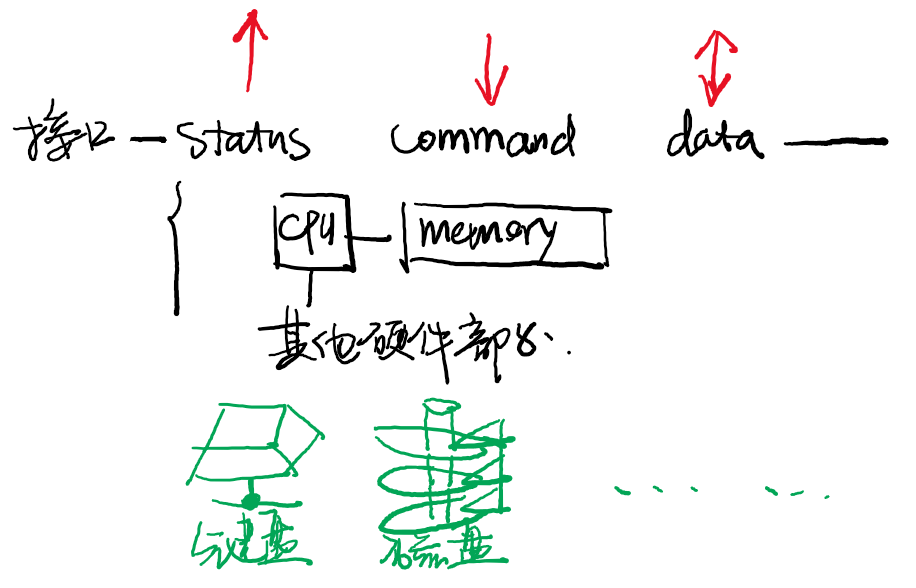
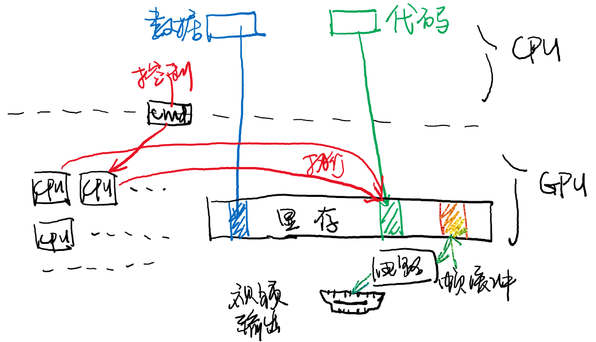
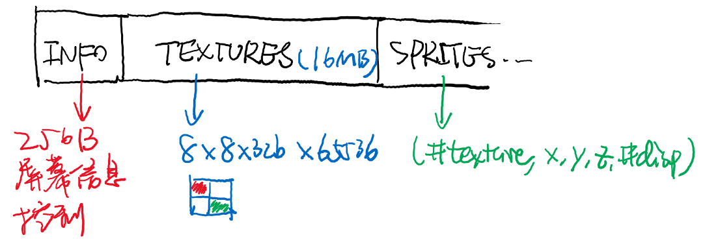

public: True class: center, middle # I/O设备与驱动 蒋炎岩 <jyy@nju.edu.cn> 南京大学计算机软件研究所 --- # 本讲概述 > 上一讲中我们知道了“bits”是如何存储的 > > * 存储介质相当于是一个字节数组`bool bits[CAPACITY];` > * 不同设备的读/写特性不同 > > 操作系统如何管理形形色色的设备？ > > * 存储设备 > * 交互设备：键盘、鼠标、打印机…… ---- * I/O设备：键盘、磁盘、显卡 * 操作系统中的I/O设备管理 --- class: center, middle # I/O设备 --- # 我不是修电脑的 在上计算机系以前，很多同学都有一个认识 * “计算机系就是装(修)电脑的” * 但都大二了，还没有学过怎么修电脑 -- count: false ---- 用电脑 = 和I/O设备交互 * 用户只看到I/O设备，连“电脑里有CPU”都不需要知道 * 但I/O设备又不是“造计算机”最难的部分 --- # 什么是I/O设备？ 设备是三种.red[操作]的集合 * 发送命令、读取状态、传输数据 .center[] --- # 键盘 按键信息会存储到键盘内置的.red[缓冲]数据区 * 缓冲区通常大小是有限的 * 如果缓冲区满，后续按键将会丢失 (可能会发出声音) ```c // x86 i8259 int status = inb(0x64); if ((status & 0x1) == 0) { // no input } else { if (status & 0x20) { // mouse } else { int code = inb(0x60) & 0xff; // 按键的“扫描码” } } ``` --- # 键盘控制器 IBM PC/AT 8042 Keyboard Controller * 设备通常提供诸多配置选项 ---- | Command Byte | Use | 说明 | | ------------ | ---------------- | ------------------------------- | | 0xED | 设置LED灯 | ScrollLock/NumLock/CapsLock | | 0xF3 | 设置键盘重复速度 | 30Hz - 2Hz; Delay: 250 - 1000ms | | 0xF4/0xF5 | 打开/关闭 | N/A | | 0xFE | 重新发送 | N/A | | 0xFF | RESET | N/A | --- # 磁盘 磁盘是一个巨大的bit array (`bool disk[CAPACITY]`) * 机械硬盘、SSD (with FTL)、… --- # 磁盘控制器 配置好需要读/写的位置，然后开始传送数据 ```c void waitdisk(void) { while ((in_byte(0x1F7)&0xC0) != 0x40); } void readsect(volatile void *dst, int sect) { waitdisk(); out_byte(0x1F2, 1); // 读sector的数量 out_byte(0x1F3, sect); out_byte(0x1F4, sect >> 8); out_byte(0x1F5, sect >> 16); out_byte(0x1F6, (sect >> 24) | 0xE0); out_byte(0x1F7, 0x20); waitdisk(); for (int i = 0; i < SECTSIZE / 4; i ++) ((uint32_t *)dst)[i] = in_long(0x1F0); } ``` --- # I/O设备：实现 CPU终究是通过地址和数据访问I/O设备的 * Port IO/MMIO只是两种不同的地址空间 * 电路负责根据地址把地址和数据“转发”给设备 .center[<img src="/static/wiki/os/2019/img/sys-devices.png" width="400px"/>] --- # 原理简单、实现复杂 I/O设备通常提供丰富的功能 例子：总线支持 * 设备热插拔(Plug and Play) * 高速传输 * 中断管理 (之后介绍) * DMA (之后) * …… ---- 非常繁琐的技术细节，但目的明确 * 让CPU能访问I/O设备 * 因此很少在课程中详细提及 --- # 显示加速器 玩游戏为啥需要显卡？ * 我们写过amgame了，游戏不就是画点么…… .center[] --- # 因为CPU太慢了！ NES CPU: 6502 @ 1.79MHz, IPC = 0.43 * 60FPS = 13,000条指令内渲染一帧 * 屏幕大小：256 x 240 = 61K像素 ---- 解放CPU：.float-right[<img src="../static/wiki/ics/2018/slides/img/nes-sprite.png" width="200px"/>] * CPU “描述”他想绘制什么：在(x, y)坐标的位置上有一个xx样的图形 * 另外一个处理器来绘制 --- # 显示加速器：原理 (1) GPU是一个“协处理器” * CPU可以将代码和数据传输给GPU * GPU执行程序，并且可以将程序的一部分输出绘制到屏幕上 ---- .center[] --- # 显示加速器：原理 (2) .center[<img src="../static/wiki/os/2019/img/gpu-1.png" width="600px"/>] --- # 为显卡编程 ```c __global__ void hello(char *a, char *b) { a[threadIdx.x] += b[threadIdx.x]; } char a[N] = "Hello "; char b[N] = {15, 10, 6, 0, -11, 1}; cudaMalloc( (void**)&ad, N ); cudaMalloc( (void**)&bd, N ); cudaMemcpy( ad, a, N, cudaMemcpyHostToDevice ); cudaMemcpy( bd, b, N, cudaMemcpyHostToDevice ); printf("%s", a); // Hello dim3 dimBlock( blocksize, 1 ); dim3 dimGrid( 1, 1 ); hello<<<dimGrid, dimBlock>>>(ad, bd); // run on GPU cudaMemcpy( a, ad, N, cudaMemcpyDeviceToHost ); printf("%s\n", a); // World! ... ``` --- # 电子游戏 .float-right[<img src="../static/wiki/os/2019/img/g-fat.gif" width="300px"/>] * 在每一帧游戏中，引擎计算逻辑 * UI元素 * 玩家的状态 * 怪物的位置 * AI的决策 * 把场景数据准备、代码准备给显示控制器 * `cudaMalloc`, `cudaMemcpy`, ... * 通知显示控制器渲染`render<<<dim1,dim2>>>(...)` * 这件事到底是怎么完成的 → 《计算机图形学》 --- class: center, middle # 管理I/O设备 --- # 如何查看系统里的I/O设备？ ``` $ cat /proc/iomem 00000000-00000fff : Reserved 00001000-0009fbff : System RAM ... $ lspci 00:00.0 Host bridge: Intel Corporation 440FX - 82441FX PMC [Natoma] (rev 02) 00:01.0 ISA bridge: Intel Corporation 82371SB PIIX3 ISA [Natoma/Triton II] ... $ lsblk NAME MAJ:MIN RM SIZE RO TYPE MOUNTPOINT loop0 7:0 0 91.1M 1 loop /snap/core/6531 ... sda 8:0 0 128G 0 disk ├─sda1 8:1 0 1M 0 part └─sda2 8:2 0 128G 0 part / sr0 11:0 1 1024M 0 rom ``` 问题：.green[lspci, lsblk是如何实现的]？ --- # Loop Back Devices “回路”设备 * 可以把一个文件模拟成一个块设备 ---- `mount xiao_dian_ying.iso -o ro /mnt/ ` 会创建一个新的loopback device: ``` $ lsblk NAME MAJ:MIN RM SIZE RO TYPE MOUNTPOINT ... loop3 7:3 0 350K 1 loop /mnt ... ``` --- # 回顾：I/O设备模型 用代码访问I/O设备： * 等待设备空闲 * 给设备发送数据和命令 * 等待设备完成命令 ```c void write(device, cmd, buf, length) { while (read(STATUS) == BUSY) ; // polling (忙等待) for (int i = 0; i < length; i++) { write(DATA, buf[i]); } write(COMMAND, cmd); while (read(STATUS) == BUSY) ; // polling (忙等待) } ``` --- # 拒绝忙等待 刚才的模型中，CPU需要.red[等待]I/O设备 * 7200rpm磁盘寻道需要8.3ms * 对现代计算机系统来说，这是执行.blue[上百万]条指令的时间 * 不如：让设备完成以后，通知一下计算机？ ---- .red[利用中断机制] * 在设备完成请求/发生变化时通知处理器 * 例子：磁盘可以配置成“命令完成后发送中断” * 例子：再也不需要轮询键盘，有按键按下后会收到键盘中断 --- # 操作系统管理I/O设备：挑战 I/O设备难以管理： * .red[类型众多] * 仅存储设备：磁带、HDD、SSD、USB Flash…… * 不同品牌的键盘，功能各不相同、控制指令也差距很大 (比如跑马灯) * .red[访问模式差距很大] * 速度差异：网卡(10Gbps) vs 键盘 (0.1kbps) * 容量差异：磁盘(10TB) vs 键盘 (16B) --- # 解决：抽象层——设备驱动 I/O设备的主要功能是.red[input/output]，即read/write * 从某个offset读/写一定数量的字节 ---- 还有一些.red[设备相关的设置]，不便于作为read/write实现 * 切换缓冲区 * 设置串口波特率 * 发射核弹 ☢️ --- class: center, middle # Lab2 设备驱动 --- # 设备抽象 Lab2里只有“静态”设备 * 从系统启动后就一直存在 * 简化了很多(Plug and Play非常麻烦) * 每个设备有三个操作：初始化、读、写 ---- ```c typedef struct device device_t; typedef struct devops { int (*init)(device_t *dev); ssize_t (*read)(device_t *dev, off_t offset, void *buf, size_t count); ssize_t (*write)(device_t *dev, off_t offset, const void *buf, size_t count); } devops_t; typedef struct { void (*init)(); } MODULE(dev); ``` --- # Lab2 Ramdisk 每个设备有一个私有的指针 (用于存储私有数据) * ramdisk用于存储ramdisk的头部 ```c ssize_t rd_read(device_t *dev, off_t offset, void *buf, size_t count) { rd_t *rd = dev->ptr; memcpy(buf, ((char *)rd->start) + offset, count); return count; } ``` --- # Lab2键盘 对键盘的`read()`包含了信号量`P()`操作 * read会在没有数据时阻塞 (而非忙等待) * IODEV中断到来后，`V(&sem_kbdirq);` * 唤醒另一个线程(`input_task`)，读取按键`V()` ---- (input.c) --- # Lab2显示控制器 虚拟的2D加速设备 * 管理若干8x8的spires，可以绘制到屏幕任何地方 * (目前基于AM video，实现不完整) * 可以实现在OpenGL、自制图形加速器等 ---- .center[] --- class: center, middle # DMA --- # 回顾 我们已经知道设备是什么 * 一个能够read/write/配置的对象 * 在设备状态发生改变时，会用中断通知CPU ---- CPU使用设备的流程 * .green[给设备发送命令] (指令数量较少，因此相对较快) * → .red[传送数据] (数据量大时非常耗时) * → .blue[等待设备完成] (设备与CPU并行) --- # 中断没能解的问题 假设程序希望写入1GB的数据到磁盘 * 即便磁盘已经准备好，依然需要非常浪费缓慢的循环 * out指令写入的是设备缓冲区，需要去.red[总线]上绕一圈 ```c for (int i = 0; i < 1GB / 4; i++) { outl(...); } ``` ---- 我们能不能.red[设计一个I/O设备]来完成.red[CPU和设备之间的数据传输]？ * `memcpy(device_of(HD0), buf, length);` --- # Direct Memory Access DMA：可以理解为实现`memcpy()`的I/O设备 * 内存-内存、端口-内存的复制 * 这样CPU就可以在传送数据时做其他事 .center[<img src="/static/wiki/os/2019/img/dma.png" width="640px"/>] --- # DMA (cont'd) 在有DMA的系统中，I/O的数据传送时间大幅减少 * .green[给设备发送命令] (指令数量较少，因此相对较快) * → .red[传送数据] (DMA与CPU并行，完成后中断) * → .blue[等待设备完成] (设备与CPU并行) ---- 高速/超高速设备全部使用DMA传送数据 * PCI总线自带DMA * 网卡、显卡、磁盘、…… --- # 小结：性能不够，处理器来凑 在计算机系统中，有很多对CPU来说耗时的工作 为了.red[解放CPU]用于通用计算 * I/O设备不仅用于“输入/输出” * .blue[每当需要做一件耗费CPU太多时间的专有工作，就可以增加一个I/O设备] ---- * 图形渲染 → GPU * 大规模数据传送 → DMA --- # 内存一致性 ```c // CPU x = 1; dma_memcpy(MEM_TO_DEV, dev, offset, NULL, &x, sizeof(x)); ``` ---- 还记得之前被并发支配的恐惧吗？ * 在执行`dma_memcpy`之前，必须保证.red[数据到达内存] (一致性) * 在虚拟存储管理时会回到这个问题